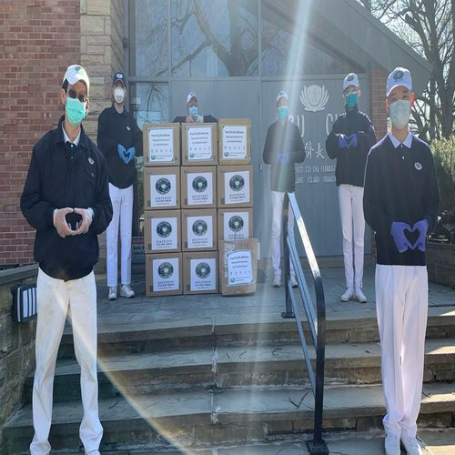
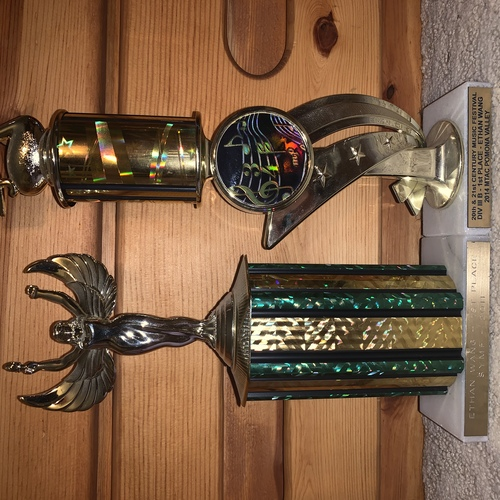
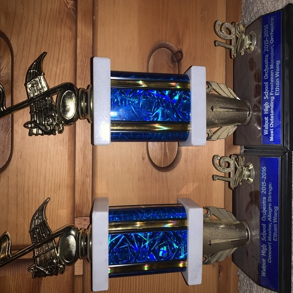
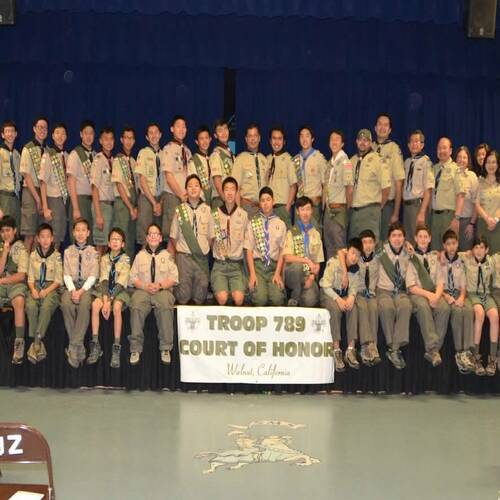

Ethan Wang
Hi, my name is Ethan Wang. I was born on October 25, 2001, making me 18 years old. At the moment, I attend the University of California, Riverside while residing in Walnut, California. As of right now I am an economics and Growing up, I was exposed to a wide variety of activities by my parents. At age 3, I began piano and violin instruction. Playing instruments my entire life proved a valuable experience. There is much to learn from playing them, especially tenacity. Learning new music is no easy feat, especially if it requires advanced technique. The process is tedious, and instills perseverance. Around that time, I also began skiing. Everyone who has tried snowsports knows its initial difficulty, and how much effort must be put into surmounting the learning curve.
This determination I developed would later be reinforced when I learned snowboarding at age 8, around the same time I began basketball, Cub Scouts, and joined an orchestra. These activities built a strong sense for teamwork within me that remains strong to this day. I would go as far as to say that I definitely prefer team activities over individual activities, as they allow for a stronger support and accountability system. Once I enrolled in middle school, I was a sixth grader and that meant it was time for me to move up to Boy Scouts. Boy Scouts has shaped who I am today in more ways than I am aware of. However, I can attribute my growth as a leader to my time with the organization. Though leadership positions were limited for younger scouts, I still went for them and once I got them, I fulfilled them to the best of my ability. Mentorship in my troop was great, as it was layered. Older scouts were the first references to answer questions, and then the adults only if necessary. One of the key values of Boy Scouts is “boy-led,” which means that leadership and organization should fall solely on the scouts, with adults present only for legality and driving. In my eighth grade, I ran for a position on my school orchestra’s cabinet. I earned it, and was able to effectively implement what I learned from scouting to be a competent leader.
Sophomore year of high school, I joined the school golf team. Being on the golf team was a unique and enlightening experience, as it combines the aspects of individual and team success. For the team to succeed, each player must individually succeed and perform their best. Just one player’s poor performance can be enough to make the entire team lose. Now near the end of my age eligibility, when I was 16 I picked up the top troop leadership role. It taught me invaluable skills about being a leader, notably that leaders must lead by example and as a result, many things are my responsibility whether or not they were in my direct control. However, studying and homework were never my strength and as a result I finished with a low 3s GPA. A 1420 SAT score alongside an array of strong AP and SAT II scores would be enough to bring me to UCR, where I am working to develop my studying and homework habits.
Experience
Room Captain
• supervised over competition room
• assisted judges
• handled correspondances between staff, judges, and competitors
Volunteer
• participated in sustainability and recycling efforts
• visited nursing homes and homeless shelters to assist
• raised money for numerous charitable efforts
Education
UC Riverside
Portfolio




.jpg)